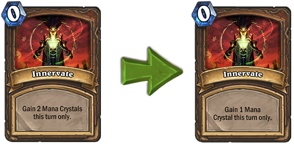
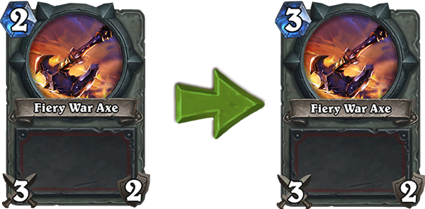
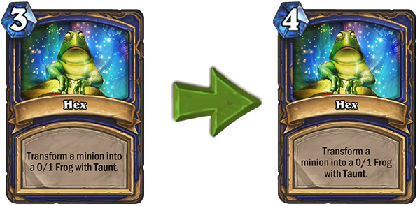
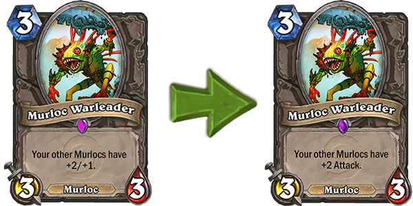
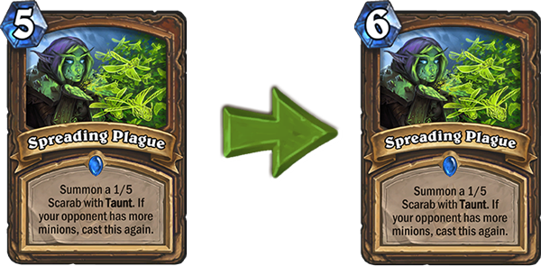

Blizzard gaat een aantal kaarten in Hearthstone nerfen. Een aantal decks zijn sinds de release van The Frozen Throne behoorlijk sterk geworden en met deze nerfs hoopt Blizzard daar iets aan te doen.
De vijf kaarten die worden aangepast zijn: Innervate, Fiery War Axe, Hex, Murloc Warleader en Spreading Plague.
De aanpassing voor Innervate heeft te maken met de kracht die Druids op dit moment hebben. Naast een sterke openingshand was de kaart ook een lategame monster in combinatie met Ultimate Infestation. Door één Mana Crystal minder te geven, wordt dat nu teniet gedaan.
Fiery War Axe wordt één Mana duurder gemaakt. Dit zorgt ervoor dat de kaart iets trager wordt om te spelen. Vooral aggressieve decks zoals Pirate Warrior maakten gebruik van deze kaart. Het duurder maken van de kaart zorgt er voor dat het snelle tempo van dit deck een stukje lager wordt.
De aanpassing van Hex komt voort uit het gebruik van de Shaman-klasse. Blizzard vindt niet dat de kaart 'te sterk is', maar wel dat Shaman eigenlijk geen duidelijke zwakke kant heeft. De control Shaman wordt hierdoor generfd.
De Murloc Warleader was een geweldige methode om heel vroeg een heel sterk board te hebben. Op turn 3 gooide je de Warleader op en het was voor de tegenstander bijna onmogelijk om het board nog te kunnen clearen. Door de extra health weg te halen die de Warleader geeft, zal onder andere de Murloc Paladin een stukje makkelijker zijn om te kunnen verslaan.
Nog een nerf voor Druids: Spreading Plague. Deze kaart is nog steeds een goede manier om te zorgen voor de nodige defensive minions, maar volgens Blizzard kon men deze kaart te vroeg spelen. Door hem 1 mana duurder te maken, is de kaart iets trager geworden. Het team heeft zelfs overwogen om Spreading Plague 7 mana te laten kosten. Door de nerf bij Innervate heeft het team besloten dit niet te doen.
Het team heeft uiteraard ook andere kaarten bekeken, onder andere Ultimate Infestation. De makers realiseren zich dat het heel erg naar is om te verliezen van deze kaart en hebben overwogen om hem aan te passen. Door de aanpassingen die ze al doen aan Innervate, hebben ze besloten dit niet te doen. Laten we hopen dat met deze aanpassingen de Druid-klasse een stuk minder sterk is geworden zodat we met andere decks ook de ladder kunnen beklimmen.